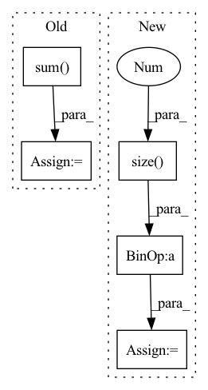

Pattern ID :3286

Before Change
def forward(self, x, neighbor):
fadj = self.feature_adjacency(x, neighbor)
self.adj += fadj.sum(0)
x = self.feat1(x, fadj)
x = self.acvt1(x)
x = self.feat2(x, self.adj)
x = self.acvt2(x)
After Change
def forward(self, x, neighbor):
fadj = self.feature_adjacency(x, neighbor)
adj = self.row_normalize(self.adj.sqrt()) + torch.eye(x.size(-1),device=x.device)
x = self.feat1(x, fadj)
x = self.acvt1(x)
x = self.feat2(x, fadj)
In pattern: SUPERPATTERN
Frequency: 3
Non-data size: 5
Instances
Fragment ID: 17218516
Project Name: wang-chen/lgl
Commit Name: 8301c0340a820f10327286d4fbe47b2ee06aca13
Time: 2020-05-12
Author: jeffsan@gmx.com
File Name: models.py
M Class Name: Net
N Class Name: Net
M Method Name: forward(3)
N Method Name: forward(3)
M Parent Class: nn.Module
N Parent Class: nn.Module
M File Name: models.py
N File Name: models.py
M Start Line: 49
M End Line: 53
N Start Line: 53
N End Line: 57
'>
Before Change
p = self.projection(c_onehot)
x += torch.sum(p * h, dim=1, keepdim=True)
return x
After Change
in_prod = p * h
x = x.view(x.size(0), -1)
x = torch.mean(x, dim=-1) + torch.mean(in_prod, dim=-1)
return x
'>
Fragment ID: 17218517
Project Name: samuelbroughton/stargan-voice-conversion-2
Commit Name: 26484a2db5a00247535c7ec7c1f97c10e711e022
Time: 2020-09-01
Author: broughtonjsam@gmail.com
File Name: model.py
M Class Name: Discriminator
N Class Name: Discriminator
M Method Name: forward(4)
N Method Name: forward(4)
M Parent Class: nn.Module
N Parent Class: nn.Module
M File Name: model.py
N File Name: model.py
M Start Line: 193
M End Line: 208
N Start Line: 190
N End Line: 206
'>
Before Change
pred = pred * mask
target = target * mask
a = torch.sum(pred * target)
b = torch.sum(pred)
c = torch.sum(target)
d = (2 * a) / (b + c + self.eps)
After Change
pred = pred.contiguous().view(pred.size(0), -1)
gt = gt.contiguous().view(gt.size(0), -1)
mask = mask.contiguous().view(mask.size(0), -1)
pred = pred * mask
gt = gt * mask
dice_coeff = (2 * (pred * gt).sum()) / (
pred.sum() + gt.sum() + self.eps)
'>
Fragment ID: 17218510
Project Name: open-mmlab/mmocr
Commit Name: 1cbc42eceb40334c56474b979b1ac5be0065280a
Time: 2022-07-20
Author: gaotongxiao@gmail.com
File Name: mmocr/models/common/losses/dice_loss.py
M Class Name: DiceLoss
N Class Name: MaskedDiceLoss
M Method Name: forward(4)
N Method Name: forward(4)
M Parent Class: nn.Module
N Parent Class: nn.Module
M File Name: mmocr/models/common/losses/dice_loss.py
N File Name: mmocr/models/common/losses/dice_loss.py
M Start Line: 16
M End Line: 31
N Start Line: 25
N End Line: 58